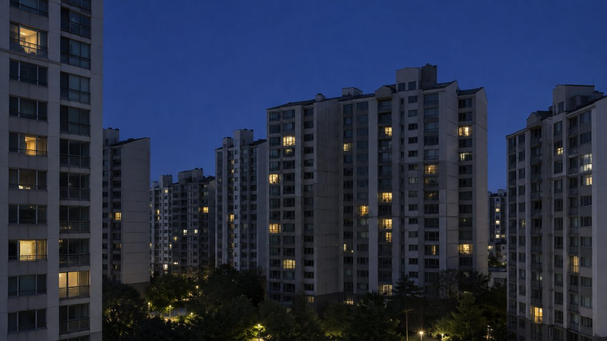

안산에너지절약마을 20년…올해 에너지의 날 아파트 22곳·약 2만5,000세대 함께 불 껐다

행정·시민단체 연대한 안산에너지전환과자립네트워크, 매달 22일 밤 9시부터 10분 소등…'에너지 지킴이' 3기·'에너지 서포터즈'로 가정에서 단지로
경기 안산의 행정기관과 시민단체가 함께 꾸려 온 '안산에너지절약마을'이 20년째 가정과 마을 단위의 에너지 절약 운동을 이어 가고 있다. 안산녹색소비자연대가 사무처를 맡고 안산시, 안산녹색환경지원센터, 안산시지속가능발전협의회, 안산YMCA, 풀뿌리환경센타, 안산시자원봉사센터 등이 함께하는 안산에너지전환과자립네트워크는 5일 그간의 활동을 소개했다. 올해 에너지의 날인 8월 22일에는 안산 22개 아파트 약 2만5,000세대가 소등행사에 함께했고, 네트워크는 매달 22일 밤 9시부터 10분 동안 불을 끄는 행사를 시민·공동체와 함께 이어 가고 있다. 각 가정의 전기·에너지 사용을 점검하며 절약을 실천하는 '에너지 지킴이' 3기와, 이 실천을 아파트와 지역공동체로 넓히는 '에너지 서포터즈'도 활동 중이다. 지난달 28일 안산시마을공동체종합지원센터에서 열린 '2026 안산에너지절약마을 활동공유회'에는 31명이 모여 올해 활동을 돌아보고 우수 활동을 시상했으며 2027년 활동 방향을 논의했다. 김혜경 안산녹색소비자연대 사무처장은 시민이 직접 참여하는 절약 활동을 20년 동안 꾸준히 이어 왔다는 데 의미가 있다며, 가정의 실천을 아파트와 지역공동체의 공동 행동으로 이어 절약이 생활문화가 되도록 하겠다고 말했다.
시민에너지 관점
아파트 22곳 약 2만5,000세대가 같은 시각에 불을 끌 수 있다는 것은, 안산의 아파트 단지가 이미 함께 움직이는 에너지 공동체라는 뜻이다. 아끼는 운동이 전기를 만들고 소유하는 일로 이어지기는 어렵다는 지적도 있지만, 영국 런던 브릭스턴에서는 주민 협동조합 '브릭스턴 에너지'가 공공임대주택 지붕에 주민 출자로 태양광을 올렸고, 안산에서도 시민이 출자한 햇빛발전협동조합이 공공건물 지붕에 발전소를 세워 왔다. 절약으로 줄인 전기와 지붕에서 만든 전기가 같은 단지 안에서 만날 때, 요금으로 빠져나가던 돈이 주민의 몫으로 돌아온다. 20년 동안 쌓은 소등 네트워크를 단지별 지붕 태양광 출자 모임으로 넓히고, 시는 공동주택 지붕을 주민 공동체가 먼저 쓸 수 있도록 제도를 갖춰야 한다.
출처: 국민일보 2026-11-05 강희청 원문 보기
安山エネルギー節約村20年…今年の「エネルギーの日」にマンション22カ所・約2万5,000世帯が一斉消灯
行政と市民団体が連携する安山エネルギー転換と自立ネットワーク、毎月22日夜9時から10分間の消灯…「エネルギー守り人」3期と「エネルギーサポーターズ」で家庭から団地へ
韓国京畿道安山市の行政機関と市民団体が共に運営してきた「安山エネルギー節約村」が、20年にわたり家庭と地域単位の省エネ運動を続けている。安山緑色消費者連帯が事務局を務め、安山市、安山緑色環境支援センター、安山市持続可能発展協議会、安山YMCA、草の根環境センター、安山市ボランティアセンターなどが参加する安山エネルギー転換と自立ネットワークは5日、これまでの活動を紹介した。今年の「エネルギーの日」の8月22日には安山市内の22のマンション団地の約2万5,000世帯が消灯行事に参加し、ネットワークは毎月22日夜9時から10分間明かりを消す行事を市民や地域共同体と共に続けている。各家庭の電気・エネルギー使用を点検して節約を実践する「エネルギー守り人」3期と、その実践をマンションや地域共同体へ広げる「エネルギーサポーターズ」も活動中だ。先月28日に安山市マウル共同体総合支援センターで開かれた「2026安山エネルギー節約村活動共有会」には31人が集まり、今年の活動を振り返って優秀な活動を表彰し、2027年の活動方向を話し合った。キム・ヘギョン安山緑色消費者連帯事務処長は、市民が直接参加する節約活動を20年間地道に続けてきたことに意味があるとし、家庭での実践をマンションと地域共同体の共同行動につなげ、節約が生活文化となるようにしていくと語った。
市民エネルギーの視点
22のマンション団地の約2万5,000世帯が同じ時刻に明かりを消せるということは、安山のマンション団地がすでに共に動くエネルギー共同体だということを意味する。節約運動が電気をつくり所有することにはつながりにくいとの指摘もあるが、英国ロンドンのブリクストンでは住民協同組合「ブリクストン・エナジー」が住民の出資で公営住宅の屋根に太陽光を載せ、安山でも市民が出資した太陽光発電協同組合が公共施設の屋根に発電所を建ててきた。節約で減らした電気と屋根でつくった電気が同じ団地の中で出会うとき、電気料金として出ていっていたお金が住民の取り分として戻ってくる。20年かけて築いた消灯のネットワークを団地ごとの屋根太陽光の出資の集まりへと広げ、市は集合住宅の屋根を住民共同体が優先して使えるよう制度を整えるべきだ。
出典: 国民日報 2026-11-05 カン・ヒチョン 原文を読む
安山节能村20年…今年"能源日"22个公寓小区约2.5万户同时熄灯
行政与市民团体联手的安山能源转型与自立网络，每月22日晚9点起熄灯10分钟…"能源守护者"第3期与"能源支持团"把节能从家庭带到小区
由韩国京畿道安山市行政机关和市民团体共同经营的"安山节能村"，20年来一直在家庭和社区层面开展节能运动。由安山绿色消费者联合担任秘书处，安山市、安山绿色环境支援中心、安山市可持续发展协议会、安山YMCA、草根环境中心、安山市志愿服务中心等共同参与的安山能源转型与自立网络，5日介绍了这些年的活动。今年"能源日"8月22日，安山22个公寓小区约2.5万户（2万5,000户）参加了熄灯活动；该网络还与市民和社区一起，坚持每月22日晚9点起熄灯10分钟。在各家各户检查用电和能源使用、践行节约的"能源守护者"第3期，以及把这种实践推广到公寓小区和社区的"能源支持团"也在开展活动。上月28日在安山市社区共同体综合支援中心举行的"2026安山节能村活动分享会"有31人参加，回顾了今年的活动、表彰优秀活动，并讨论了2027年的活动方向。安山绿色消费者联合秘书处长Kim Hye-kyung表示，20年来坚持开展市民直接参与的节能活动具有意义，今后将把家庭实践延伸为公寓小区和社区的共同行动，让节能成为生活文化。
市民能源视角
22个公寓小区约2.5万户能在同一时间熄灯，说明安山的公寓小区已经是一个能够一起行动的能源共同体。有人认为节能运动很难延伸到发电和拥有发电设施，但在英国伦敦布里克斯顿，居民合作社"布里克斯顿能源（Brixton Energy）"靠居民出资在公共租赁住宅屋顶装上了太阳能板；在安山，市民出资的光伏发电合作社也一直在公共建筑屋顶建设电站。当节约下来的电和屋顶上发出的电在同一个小区里相遇，原本以电费形式流出去的钱，就会变成居民自己的份额回到手中。应把20年积累起来的熄灯网络扩展为各小区的屋顶光伏出资小组，市政府也应完善制度，让居民共同体能优先使用集合住宅的屋顶。
来源: 国民日报 2026-11-05 Kang Hee-cheong 查看原文
Ansan Energy Saving Village marks 20 years; about 25,000 households in 22 apartment complexes switched off lights together on this year's Energy Day
Ansan Energy Transition and Self-Reliance Network, linking city hall and civic groups, holds a 10-minute lights-out at 9pm on the 22nd of every month; third cohort of 'energy guardians' and 'energy supporters' carry saving from homes to whole complexes
The Ansan Energy Saving Village, run jointly by local government and civic groups in Ansan, Gyeonggi Province, has kept up an energy-saving movement in homes and neighbourhoods for 20 years. On 5 November the Ansan Energy Transition and Self-Reliance Network, with Ansan Green Consumers Network as its secretariat and members including Ansan City, the Ansan Green Environment Support Center, the Ansan Council for Sustainable Development, Ansan YMCA, the Grassroots Environment Center and the Ansan Volunteer Center, outlined its work. On this year's Energy Day, 22 August, about 25,000 households in 22 apartment complexes in Ansan joined a lights-out event, and the network continues to switch off lights for 10 minutes from 9pm on the 22nd of every month together with residents and community groups. A third cohort of "energy guardians" checks household electricity and energy use and puts savings into practice, while "energy supporters" spread that effort to apartment complexes and local communities. At the "2026 Ansan Energy Saving Village activity sharing meeting", held on 28 October at the Ansan Village Community Support Center, 31 people reviewed the year's work, gave awards for outstanding activities and discussed plans for 2027. Kim Hye-kyung, secretary general of Ansan Green Consumers Network, said the village matters because citizens have taken part directly in saving energy for 20 years, and that the aim is to turn household habits into joint action by apartment complexes and communities so that saving becomes part of everyday culture.
Citizen Energy View
That about 25,000 households in 22 apartment complexes can turn off their lights at the same moment shows that Ansan's apartment complexes are already energy communities able to act together. Some say saving energy rarely leads to producing and owning it, but in Brixton, London, the residents' cooperative Brixton Energy put solar panels on social housing roofs with residents' investment, and in Ansan itself a citizen-funded solar cooperative has been building plants on the roofs of public buildings. When electricity saved and electricity made on the roof meet inside the same complex, money that used to leave as power bills comes back as residents' own share. The lights-out network built over 20 years should grow into rooftop solar investment groups for each complex, and the city should put in place rules that give resident communities first use of apartment roofs.
Source: Kukmin Ilbo 2026-11-05 Kang Hee-cheong Read the original